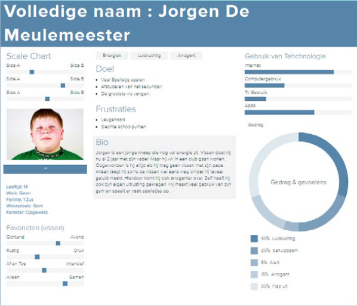
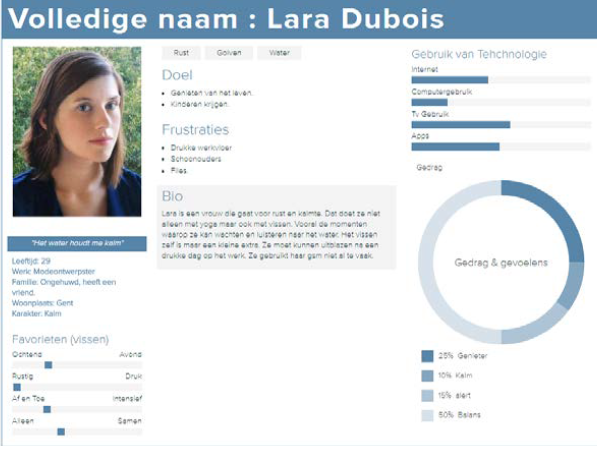
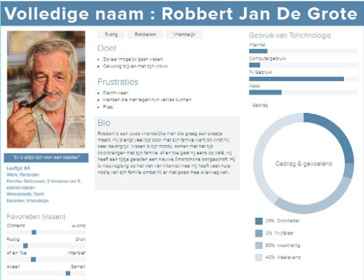
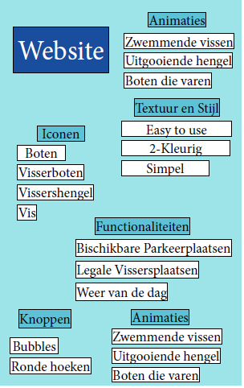
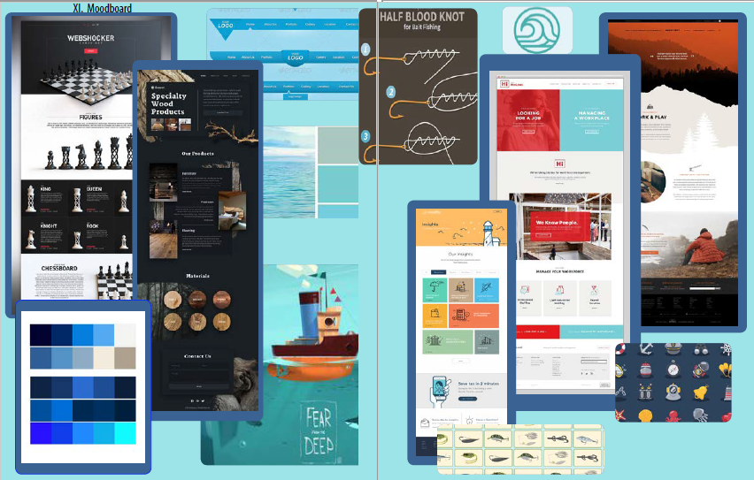
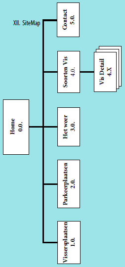

Wat is EasyFishing?
Alexander Vlachakis & Matthias De Meyer
Briefing
We creëren een app die het vissers makkelijker maakt om te vissen rond de haven van Gent
Hiervoor geven we hun verschillende soorten informatie mee zoals de plaats, het weer en de soorten vissen die gevangen kunnen worden.
Wie?
Easy Fishing is bedoelt voor mensen die willen vissen in Gent.
Niet enkel voor diegene die in Gent wonen.
Analayse
De bedoeling van de app is dat ze zo makkelijk mogelijk te gebruiken is.
We plaatsen alles zo groot mogelijk dat ook alles zichtbaar is voor oudere mensen.
Persona Sheets
  IdeaBoard
MoodBoard
Sitemap
WireFrames


Welke Informatie delen we uit?
We delen verschillende soorten uit:
- Dataset gehaald van data.stad.Gent
- Toont de mogelijke parkeerplaatsen
rond de haven van Gent - JSON geïntegreerd in de site met Leaflet
Parkeerplaatsen
- Op dezelfde manier als de parkeerplaatsen
- Dataset gehaald van data.stad.Gent
- JSON geïntegreerd in de site met Leaflet
Vissersplaatsen
- Op dezelfde manier als de parkeerplaatsen
- Dataset gehaald van data.stad.Gent
- JSON geïntegreerd in de site met Leaflet
Het weer
- Bekendste vissen worden getoond
- Korte informatie met fotoslides
- Link naar Wikipedia is beschikbaar
Soorten vissen
- Home & Menu
- Verschillende Datasets
- Soorten vissen en detailpagina
- About Us